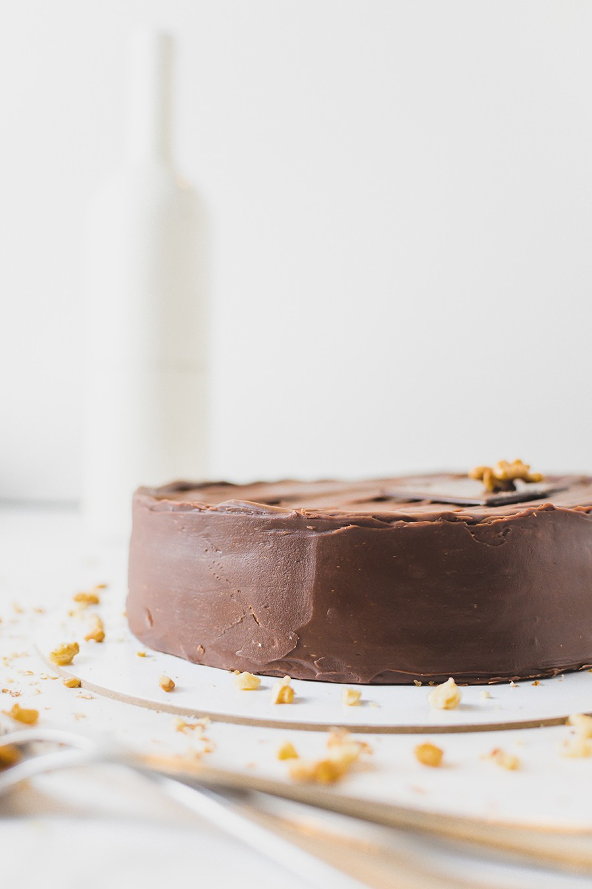
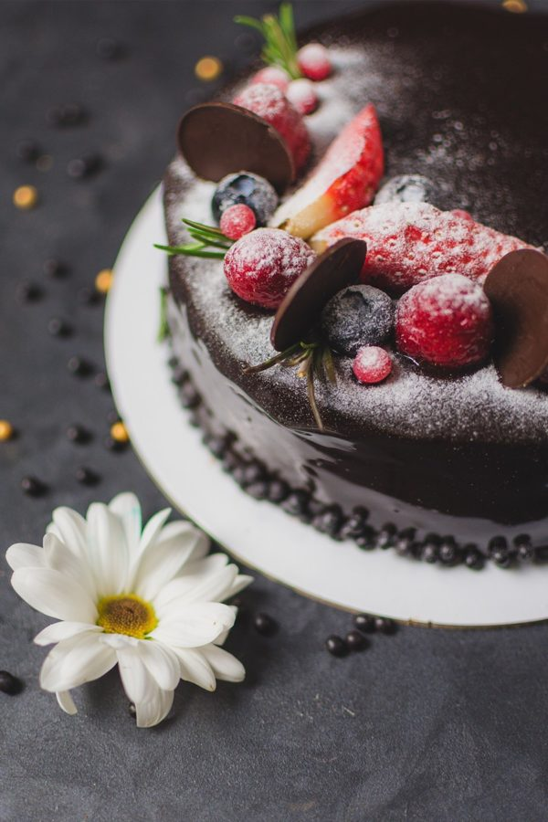
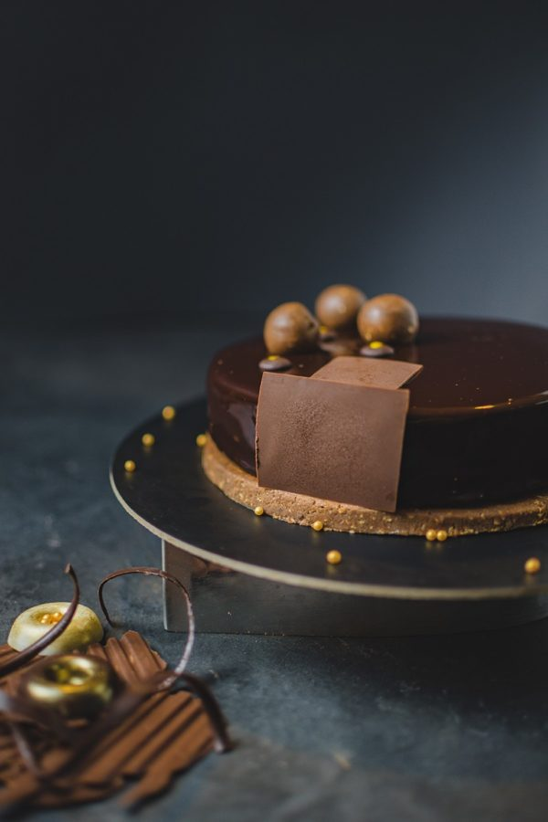
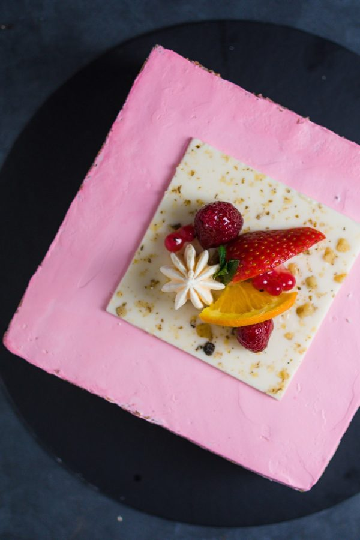

Pravi sladokusci smatraju je kraljicom torti! Reforma je tradicionalna čokoladna torta sa orasima.
Krem od jaja, čokolade i putera kuvan je na pari, kao nekada. Kore su od belanaca i oraha. Glazura torte je od čokolade.
Zbog izraženog kvaliteta, Reforma torta je nagradjena 2010. godine na Salonu Čokolade – Ukus Kragujevca. Originalni recept Mammas
Biscuit House brenda.

Voćna i kremasta. Kora je od belanaca (pusllica). Fil se sastoji od krema od žumanaca kuvanih na pari,
sa dodatkom mlečne pavlake i fila od jagoda. Tanak sloj crne čokolade doprinosi bogatstvu ukusa. Originalni recept
Poslastičarnice Aleksandar.

Torta izuzetno bogatog ukusa koji potiče od kombinacije lešnika, mlečne pavlake, čokolade, putera.
Karamelizovni lešnici daju posebnu mirisnu notu ovom bogatom ukusu. Stalno na zalihama.

Pun ukus voćnog krema sa korama od oraha. Voće, ananas, breskva i višnje, zajedno sa
kuvanim vanil kremom, čine još jedan odličan izbor za slatko uživanje.